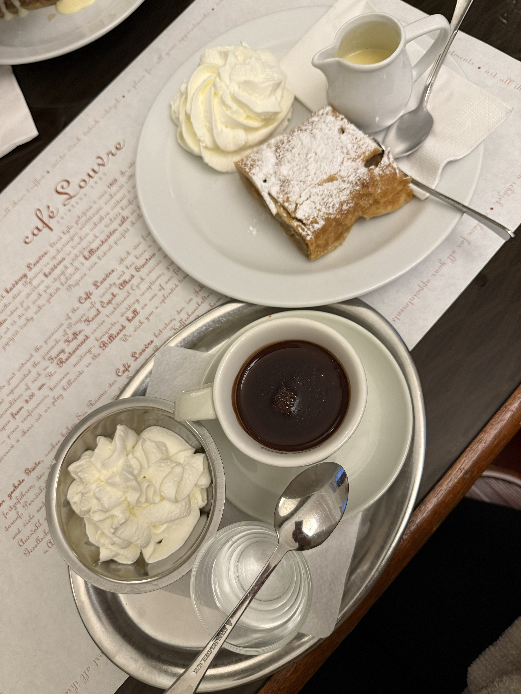
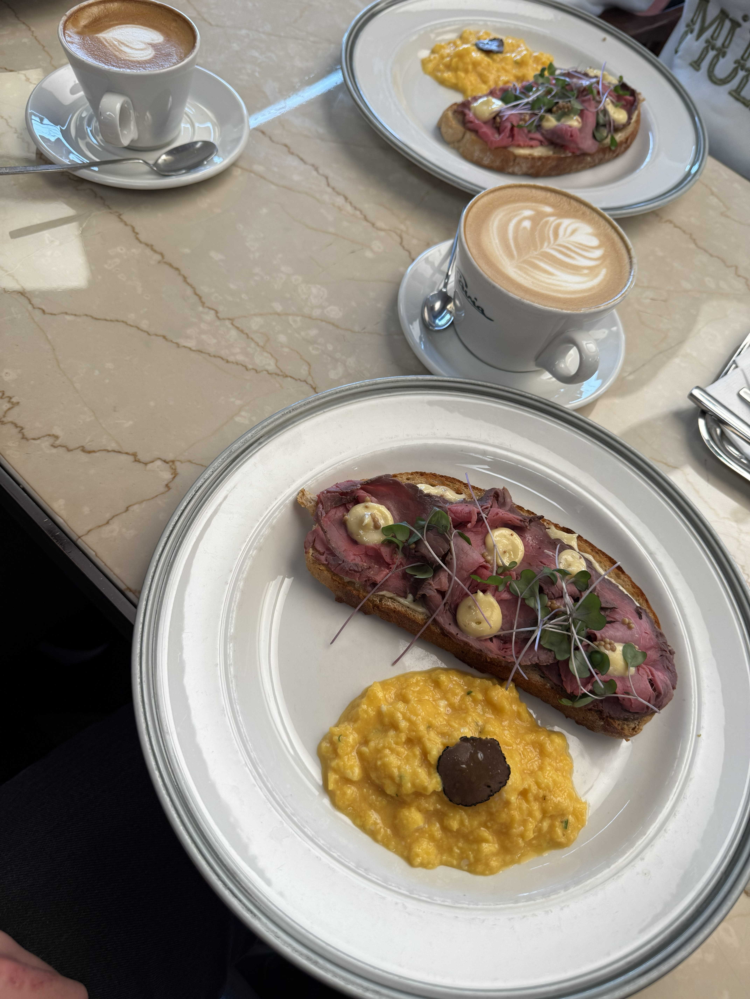
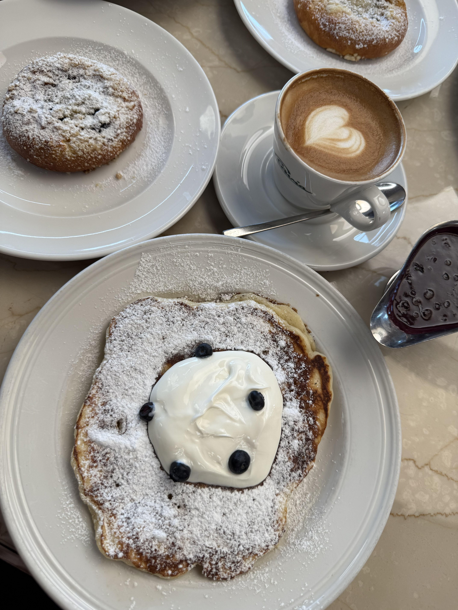
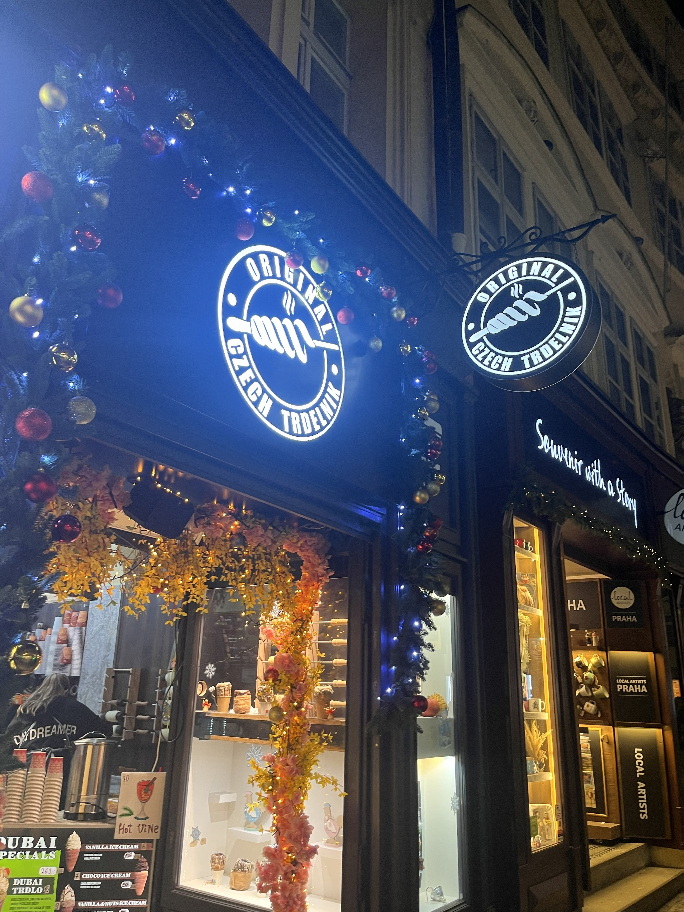

10 ) Tyn Church
The Church of Our Lady before Týn, also known as Týn Church, is one of the most
famous Gothic landmarks in Prague. Construction of the church began in the 14th
century and continued for many years, combining Gothic architecture with later
Baroque elements. Its two unequal towers, rising above Old Town Square,
symbolize the masculine and feminine sides of the world according to local
legends. The church was designed by medieval architects inspired by French
Gothic cathedrals, featuring pointed arches, detailed stonework, and impressive
interior decorations. Today, Týn Church remains an important symbol of Prague’s
historical and architectural heritage.
11 ) Powder Tower
The Powder Tower is one of the most important Gothic monuments in Prague and
served as one of the original city gates in the 15th century. Built in 1475,
the tower was designed by architect Matěj Rejsek and later completed with
Neo-Gothic details. It was originally intended to be a ceremonial entrance
for Czech kings traveling to Prague Castle during coronation processions. In
the 17th century, the tower was used to store gunpowder, which is how it
received the name “Powder Tower.” Today, visitors admire its dark Gothic
architecture, detailed stone carvings, and panoramic views of Prague from
the top.
12 ) Prague 2
Prague 2 is one of the most charming and historic districts of
Prague,
blending elegant architecture, peaceful green spaces, and deep
cultural
heritage. The area is famous for its beautiful streets, traditional
cafés, and historic atmosphere that reflects the soul of the Czech
capital. One of its greatest treasures is the ancient Vyšehrad
fortress,
dramatically located on a hill overlooking the Vltava River.
According
to Czech legends, Vyšehrad was the birthplace of Prague and the
first
residence of Czech rulers. Surrounded by massive stone walls, quiet
gardens, and scenic walking paths, the fortress offers breathtaking
panoramic views of the city skyline. Visitors can explore the
stunning
Basilica of St. Peter and St. Paul, discover the resting place of
many
famous Czech artists and writers in the historic cemetery, and enjoy
the
peaceful atmosphere that makes Vyšehrad one of Prague’s most magical
and
unforgettable locations.
13 ) Kafka's Head
The Kafka's Head is one of the most fascinating modern artworks in
Prague, combining technology, art, and literature in a unique way.
Created by the famous Czech artist David Černý, the massive moving
sculpture was installed in 2014 as a tribute to the legendary writer
Franz Kafka, who was born in Prague. Made from 42 rotating
stainless-steel layers, the sculpture continuously transforms and
reshapes Kafka’s face, symbolizing the complexity, uncertainty, and
fragmented identity often found in Kafka’s literary works. Located
near the modern shopping and business district of Prague, Kafka’s
Head creates a striking contrast between historical Prague and
contemporary artistic expression, making it one of the city’s most
memorable and symbolic landmarks.
14 ) Food
Cafe Louvre
Café Louvre is one of those places in Prague that truly makes you
feel the spirit of the city. Located on Národní Street, just a
short walk from the Old Town and the Vltava River, this historic
café has been welcoming visitors since 1902. The moment you walk
inside, the elegant interior, high ceilings, and classic
atmosphere make it feel like stepping back into old Prague. What
makes Café Louvre special is not only its beautiful design, but
also its history — famous figures such as Franz Kafka and Albert
Einstein once spent time here. Sitting by the window with a
coffee and a traditional Czech dessert while watching the
streets of Prague creates a calm and unforgettable feeling. It
is the perfect place to relax after exploring the city and
experience Prague in a more authentic and timeless way.


Apple Strudel with vanilla sauce
Toast with creamy scrambled eggs

Cafe Slavia
Café Slavia is one of the most beautiful and peaceful
cafés
in Prague. It is located near the Vltava River and has
an
amazing view of the National Theatre and Prague Castle.
When
you sit by the window with a coffee or a dessert, the
atmosphere feels calm and artistic.
For many years, writers, poets, and artists spent time
here.
One of the most famous visitors was Nazım Hikmet. During
his
time in Prague, he came to Café Slavia often to write,
think, and enjoy the city. Knowing that such an
important
poet sat in the same place makes the café feel even more
special.
Today, Café Slavia is still loved by both locals and
tourists. Some people come for the famous hot chocolate,
some for the traditional Czech desserts, and others
simply
to enjoy the warm and nostalgic feeling of the café. It
is
not just a place to drink coffee — it is a place where
history, art, and peaceful moments come together.

Czech pancakes with cream and blueberries

Tredelnik
When I visited Prague, one of the most famous street foods I tried
was Trdelník. The sweet smell of cinnamon and sugar was everywhere
in the old streets of the city. Freshly baked over hot coals, it
quickly became one of my favorite snacks in Prague.
Trdelník has an interesting history. Many people think it is
originally from Prague, but its roots actually come from Central
Europe, especially from areas connected to Hungary and Slovakia. The
dessert became popular centuries ago and was made during festivals
and special celebrations. The dough is wrapped around a wooden
stick, slowly cooked over fire, and then covered with sugar and
walnuts.
Today, Prague made Trdelník famous all around the world. In the city
center, especially near Old Town Square and the small historic
streets, you can see many bakeries making it fresh in front of
visitors. Some modern versions are filled with ice cream, chocolate,
or cream, but the classic cinnamon and sugar taste still feels the
most traditional and authentic.


Feel free to send us an email with your opinions and
suggestions:kursatndng@gmail.com